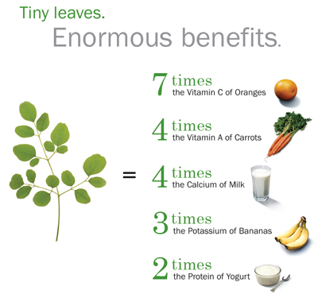

Moringa has been named "The Miracle Tree", "The Tree of Life” and “Mother’s Milk.”. It has these names because the amazing benifits it has on the body. This nutrient-dense superfood has been used consistently in Ayurvedic medicine for thousands of years, so why isn't it on more people’s radar?
So what is that’s so special about the moringa tree? Moringa oleifera, also known as the drumstick tree or horseradish tree, is a fast-growing, drought-resistant tree native to the southern foothills of the Himalayas in northwestern India. It can reach a height of 10–12m, it has fragile branches, delicate, feathery leaves and long, three-sided seed pods which hang down in clusters.
Are There Health Benefits?
The short answers is yes! Moringa is stated to have 7 times as much vitamin C as Oranges. 4 times as much Vitamin A as oranges. If you dont drink cow milk just drink some moringa tea or put the powder in a smoothie beacuse it has 4 times as much Calcium as milk. It has the 3 times the potassium as bananas and 3 times the protien as yogart. Overall this is a great super food to add to your daily diet.
